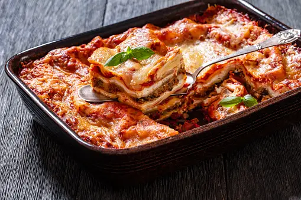

Lasagna

Description
This recipe is a homemade recipe with a meaty, made-from-scratch tomato sauce and
deliciously cheesy filling.
Ingredients
- 1 pound ground meat
- 1 diced onion
- 1 can of tomato sauce
- Two tablespoons of parsley and one glove of garlic
- Spices and herbs of your choosing
- Noodles
- Cottage cheese, Parmesan cheese, and shredded mozzarella
- Eggs
Steps
- Add meat to a deep skillet over medium-high heat. Cook and
stir until browned and crumbly (5 to 7 minutes). Add onions and cook
until translucent (about 5 minutes).
- Stir in tomato sauce, parsley, garlic, and and other herbs of your
choosing. Reduce heat to medium-low and simmer, stirring occasionally
for about 30 minutes.
- While the sauce is simmering, bring a large pot of water to boil.
Cook your lasagna noodles in the water while occasionally stiring, until
noodles become tender yet firm to bit (8 - 10 minutes). Drain and set aside.
- While noodles are cooking preheat oven to 375 degrees
- Mix your cheeses, egg, and any left over herbs and spices in a
large bowl until combined.
- Spread a layer of sauce on the bottom of your dish, followed by
2 layers of noodles over top of the sauce. Follow that layer by a layer
of a combination of cheese and sauce. Repeat these layers and cover the dish
with aluminum foil.
- Bake for 30 to 40 minutes. Remove foil and bake for another 5 to 10
minutes or until the cheese is golden brown.
- Carefully remove from the oven and let it cool for 10 minutes.
- Enjoy!